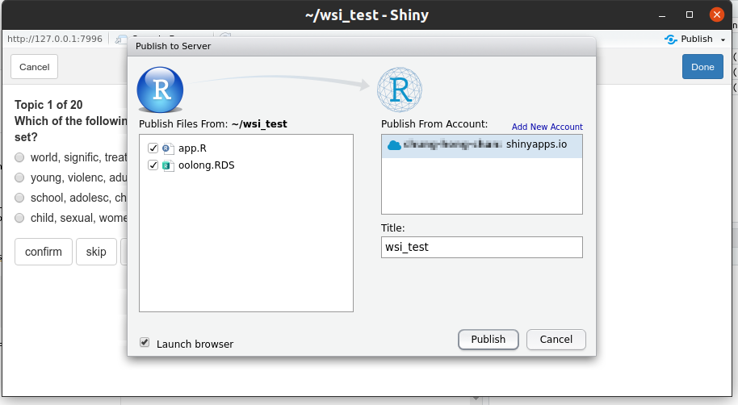
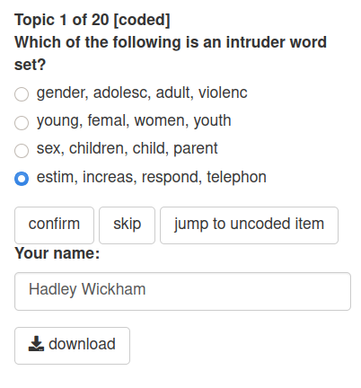

In oolong 0.3.22, functions for deploying oolong tests were added
(export_oolong, revert_oolong etc.). These
functions make it possible for the coders to conduct validation tests
online using their browser, rather than having to install R on their
computer.
The basic workflow is simple: 1) create the oolong test object as usual; 2) deploy the test online and obtain the URL to the test; 3) ask your coders to conduct the test online and send back the data file; 4) revert back from the data file to an oolong object.
Create an oolong test
Please note that one cannot deploy oolong test objects with
both word and topic intrusion tests, i.e. those created using
witi() online. If you need to do both tests, you need to
deploy them as two separate instances: one created using
wi() and another created using ti().
In this guide, we assume you want to deploy a word set intrusion test online.
library(oolong)
wsi_test <- wsi(abstracts_seededlda)
wsi_test
#>
#> ── oolong (topic model) ────────────────────────────────────────────────────────
#> ✖ WI ✖ TI ✔ WSI
#> ℹ WSI: n = 10, 0 coded.
#>
#> ── Methods ──
#>
#> • <$do_word_set_intrusion_test()>: do word set intrusion test
#> • <$lock()>: finalize and see the resultsDeploy the test online
First, you need to export the oolong test object as a stand alone Shiny app. This stand alone Shiny app will be in a directory.
export_oolong(wsi_test, dir = "./wsi_test", use_full_path = FALSE)
#> ℹ The Shiny has been written to the directory: ./wsi_test
#> ℹ You can test the app with: shiny::runApp("./wsi_test")The directory has only two files
fs::dir_tree("./wsi_test")
#> ./wsi_test
#> ├── app.R
#> └── oolong.RDSThis structure is called “Single-file Shiny app.” Experienced Shiny users might have their preferred method of deploying this app to whatever Shiny server they can master.
For less experienced users, the simplest way to deploy this app online is to use shinyapps.io (free tier available with 25 hours of computational time per month). Please register for an account at shinyapps.io and configure rsconnect. Please refer to this guide for more information. Please remember to configure the tokens.
## replace <ACCOUNT>, <TOKEN>, <SECRET> with the information from your profile on Shinyapps.io: click Your name -> Tokens
rsconnect::setAccountInfo(name="<ACCOUNT>", token="<TOKEN>", secret="<SECRET>")For RStudio users, the simplest way to deploy the app to shinyapps.io is to first launch the app.
And then click the Publish button at the right corner of the launched window.
You will be asked for the title of the app, just give it a name, e.g. wsi_test. You probably can keep other default settings and push the Publish button to initialize the deployment process.

If there is no hiccup, you will get a URL to your deployed oolong test. Something like: https://yourname.shinyapps.io/wsi_test/
Conduct the test
You can give the URL to your coders and they conduct the test with their browser online. The only difference of the deployed version is that, there will be a userid prompt and download button after the coding.

You should instruct your coders to download the data file after coding and return it to you. 2
Revert
You can then obtain a locked oolong object from the original oolong
and the downloaded data file. revert_oolong will do
verifications with the original oolong object to make sure no error and
no cheating.
revert_oolong(wsi_test, "oolong_2021-05-22 20 51 26 Hadley Wickham.RDS")#>
#> ── oolong (topic model) ────────────────────────────────────────────────────────
#> ✖ WI ✖ TI ✔ WSI
#> ☺ Hadley Wickham
#> ℹ WSI: n = 10, 10 coded.
#>
#> ── Results: ──
#>
#> ℹ 80% precision (WSI)